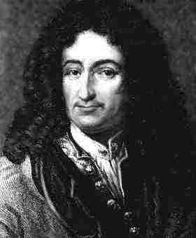

Leibniz y la simplicidad de las leyes de la naturaleza

Sans les mathématiques on ne pénètre point au fond de la philosophie. Sans la philosophie on ne pénètre point au fond des mathématiques.
Sans les deux on ne pénètre au fond de rien.
– Leibniz
(Sin las matemáticas no podemos penetrar en profundidad en la filosofía. Sin la filosofía no podemos penetrar en profundidad en las matemáticas. Sin ambas no podemos penetrar profundamente en nada.)
Guiados por el matemático Gregory Chaitin, nos aventuraremos en las ideas de complejidad gran filósofo y matemático Gotfried Leibniz. Este artículo está basado en la charla de Chaitin titulada “Leibniz, Complexity and Incompleteness”.
La primera consideración sobre la complejidad que Chaitin encuentra en Leibniz está en los “Discursos sobre la metafísica”, donde considera los “datos experimentales” correspondientes a manchas de tinta sobre una pieza de papel, obtenidos al agitar una pluma por encima. Consideremos el conjunto finito de puntos obtenidos de esta forma, y preguntémonos si este obedece una **ley natural. **Bien, para Leibniz no basta con que exista una ecuación matemática que pase por todos los puntos, porque siempre existe esa ecuación. El conjunto de puntos obedece una ley sólo si hay una ecuación simple que pase por todos los puntos.
El segundo ejemplo de la preocupación del filósofo por la complejidad está cuando este se pregunta “¿por qué hay algo, en vez de la nada, si la nada es más simple que algo?”, en 1714. en sus “Principios de la naturaleza y la Gracia.” En términos modernos lo que el filósofo racionalista quiere saber es de donde viene la complejidad observada en el mundo. Para Liebniz la respuesta es Dios. Dios ha creado el mejor mundo posible y que toda la riqueza y diversidad que observamos en el universo es el producto de un conjunto simple, bello y elegante de ideas. Dios maximiza la riqueza del mundo, al tiempo que minimiza la complejidad de las leyes que lo determinan. En términos científicos modernos, el mundo es entendible, comprehensible y la ciencia es posible, porque existe una ley que puede ser entendida.
El cosmólogo Max Tegmark argumenta que es más simple considerar un ensamblaje de todas las leyes posibles y todos los posibles universo que considerar un universo en particular. En otras palabara, el multiverso es más fundamental que la pregunta sobre las leyes de nuestro universo particular. Para ilustrar la idea, el conjunto de todos los números positivos 1,2,3,... es muy simple, aunque un positivo particular, como 12478329212991232 puede ser arbitrariamente complejo.
Quiero que reflexionen bien esta idea, es más simple pensar en el multiverso que en tratar de justificar la complejidad de nuestro universo. Todos los universos posibles existen, y el nuestro no tiene nada de particular si lo vemos desde esa perspectiva, aparece como complejo, y especial, simplemente porque vivimos en él.
En la Monadologia Liebniz discute los medios para realizar una prueba matemática. Allí él anota que para probar una sentencia complicada se divide en sentencias más simple, hasta alcanzar proposiciones que son tan simples que se hacen evidentes en si mismas y no requieren ser probadas.
Epistemólogos han analizado las ideas de Leibniz, y han observado que esta idea crucial de complejidad de Leibniz es algo muy difícil de clarificar.¿Cómo medimos la complejidad de una ecuación y por lo tanto la complejidad de las leyes naturales?
Si proponemos que el largo de la ecuación es una medida, eso es algo que cambiacon el tiempo. Además, cuales son los elementos básicos que debe tener una ecuación? ¿se considenar las funciones de Bessel como parte una notación estándar?
Si la naturaleza ha de regirse por leyes simples, como exige Leibniz, tenemos que saber cómo podemos medir la simplicidad de estas leyes, bueno, Chaitin tiene una propuesta, pero de esa hablaremos en el siguiente artículo.